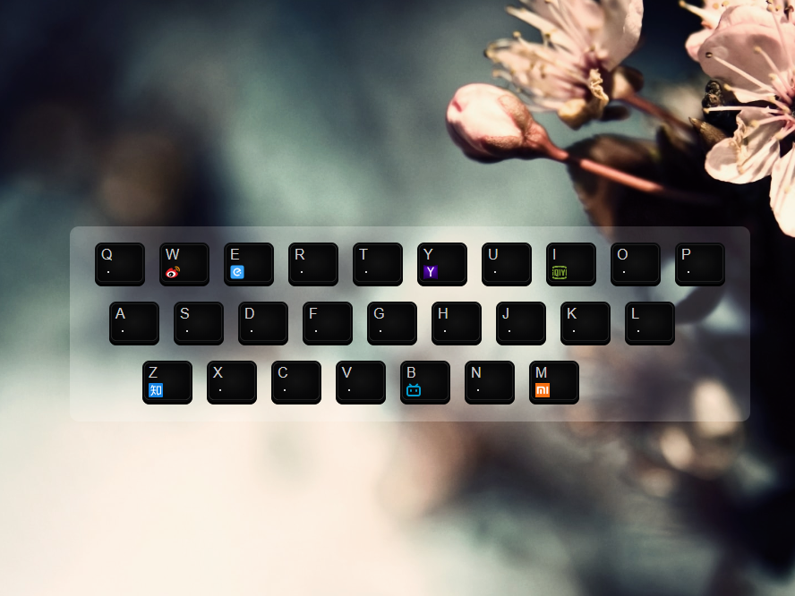
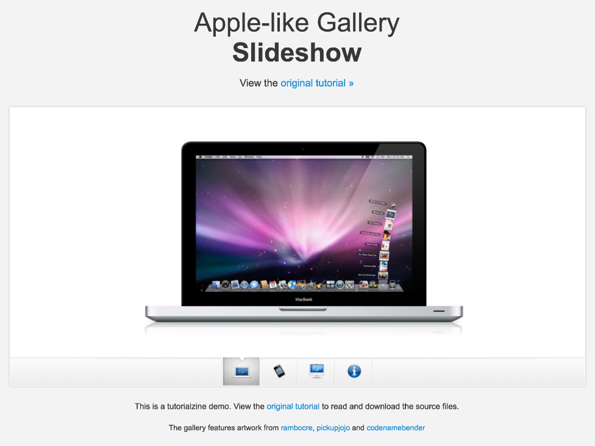
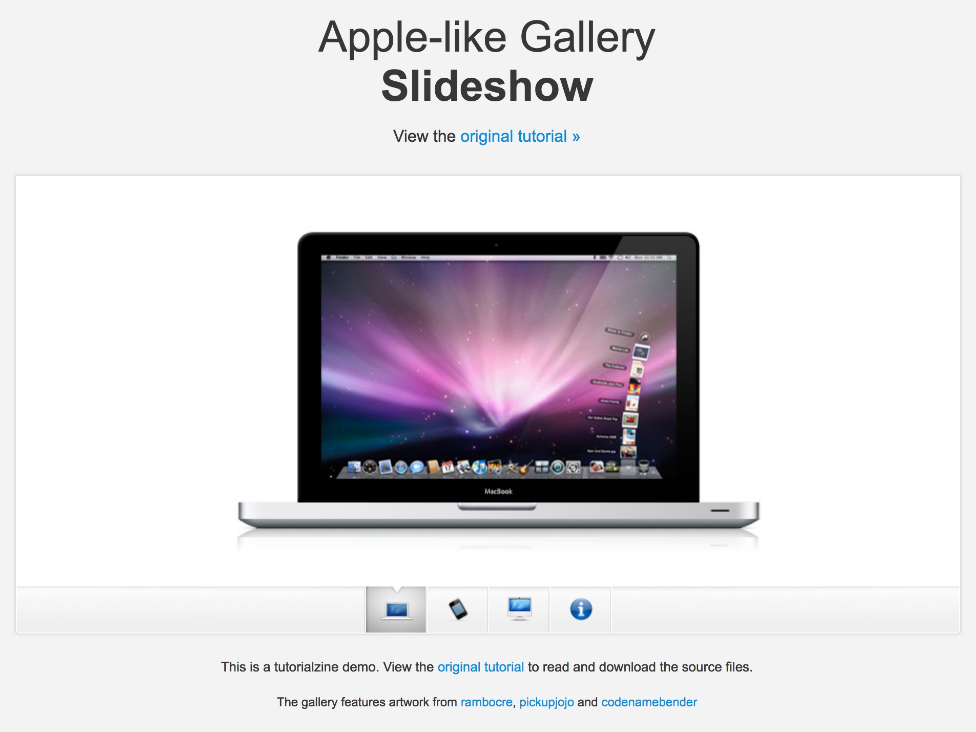
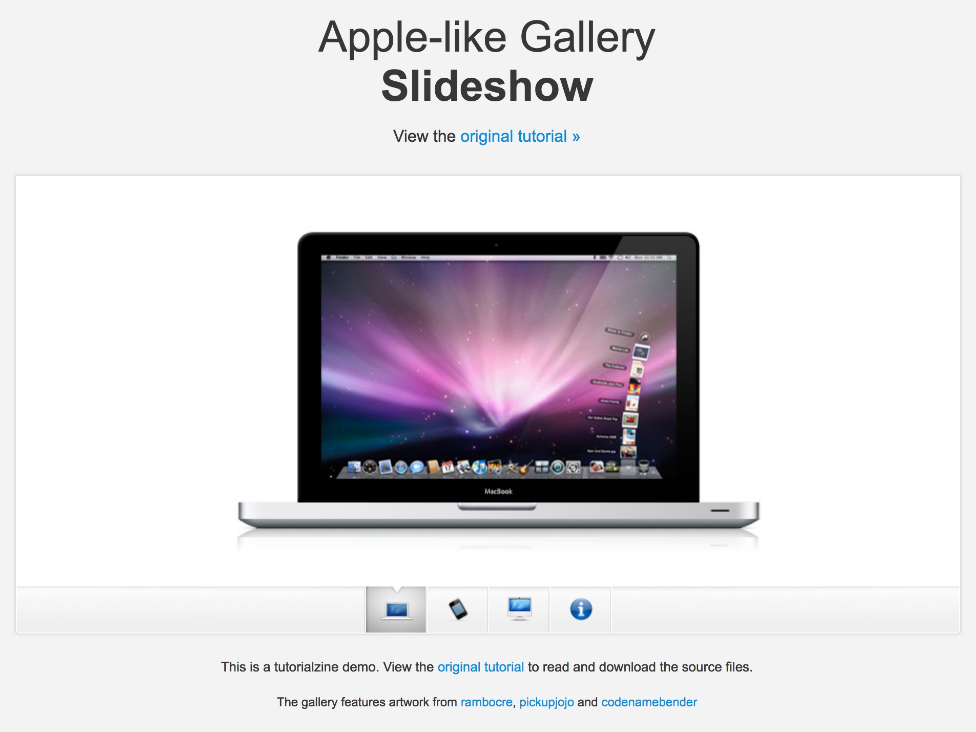

RS
card
关于
技能
作品
作品1
作品2
作品3
博客
博客1
博客2
博客3
日历
联系方式
其他
Hello
ChenZhao
前端开发工程师
年龄
30
所在城市
包头
邮箱
1193368261@qq.com
手机
15148213909
下载 PDF 简历
李辰昭，前端开发工程师。
技能：HTML5,CSS3,JavaScript,ES6,Webpack,Vue
技能
HTML 5 、 CSS3
JavaScript
Vue
ES6
WebPack
jQuery
作品集


 
